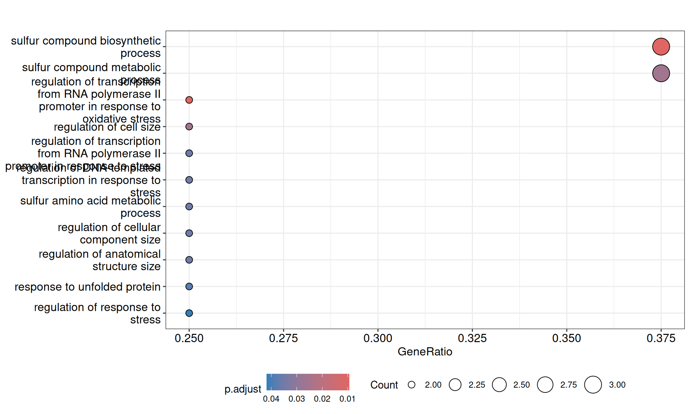

2 Genome Assembly and Annotation
2.1 On this page
Biological insights and take-home messages are at the bottom of the page at section Lesson Learnt: Section 6.5.
- Here
2.2 De novo assembly
To determine the genes in Kveiks samples, we need to do a de novo assembly and then to run an ab initio prediction of genes (using Saccharomyces proteins and genes as guide). We will use SPAdes assembler, follower by Redundans pipeline to collapse redundant contigs.
## SPAdes assembly
while read line ; do
python ~/bin/SPAdes-3.13.0-Linux/bin/spades.py \
-1 ../00_trim_reads/"${line}".R1.tr.fq.gz \
-2 ../00_trim_reads/"${line}".R2.tr.fq.gz \
-o "${line}"_SPAdes \
--threads 72 \
-k 21,29,39,59,79,99,119,127
done < ../sample.lst
## redundans
docker run -v /home/andrea/03_KVEIK/:/mydata:rw -it lpryszcz/redundan2
while read line ; do
/root/src/redundans/redundans.py \
--verbose \
--fastq /mydata/00_trim_reads/"${line}".R1.tr.fq.gz \
/mydata/00_trim_reads/"${line}".R2.tr.fq.gz \
--fasta /mydata/03_assemblies/"${line}".SPAdes.fa \
--outdir /mydata/04_redundans/"${line}" \
--threads 72 \
--log /mydata/04_redundans/"${line}".SPAdes.redundans.log
done < mydata/sample.lst
## Generate assembly stats
for file in *redundans.fa; do
perl ~/scripts/Nstat.pl $file > $file.Nstat;
done
echo "Sample"$'\t'"Total length (bp)"$'\t'"# contigs"$'\t'"longest (bp)"$'\t'"N50 (bp)" > Vikings.assembly.stats.txt;
for file in *.Nstat; do
NAME=$(basename $file .SPAdes.redundans.fa.Nstat);
LONGEST=$(tail $file | head -n 1 | tr ':' '\t' | cut -f 1);
TOT_LEN=$(grep "Total length" $file | sed 's/Total length of sequence://g');
NCONT=$(grep "Total number" $file | sed 's/Total number of sequences://g');
N50=$(grep "N50 stats:" $file | sed 's/.*sequences >= //g');
echo $NAME$'\t'$TOT_LEN$'\t'$NCONT$'\t'$LONGEST$'\t'$N50; done |\
sed 's/ bp//g' >> Vikings.assembly.stats.txt;
doneDespite being more or less fragmented, all assembled genomes are in the range of Saccharomyces sizes. Notable exceptions are: Granvin1 (???), Muri and k7R25 (which are S. cerevisiae, _ X S. eubayanus X S. uvarum triple hybrids).
2.3 Genome Annotation
We will perform ab initio annotation of the assembled genomes with the MAKER pipeline. We will use Saccharomyces RepeatMasker to mask repetitive regions, ab intio gene models are predicted with SNAP and augustus with the corresponding S. cerevisiae HMM models, ORFs from S288C_reference_genome_R64-2-1_20150113 reference genome and 1011 S. cerevisiae genomes as ESTs evidences, proteins from S288C_reference_genome_R64-2-1_20150113 genome and the following yeast proteomes as proteins evidences.
2.3.1 Gene Models Annotation
# run the MAKER pipeline
for file in *.redundans.fa; do
~/bin/maker/bin/maker -genome $file \
maker_bopts.ctl \
maker_opts.ctl \
maker_exe.ctl;
done
# summary of transcripts and proteins
for DIR in *.maker.output; do
~/bin/maker/bin/fasta_merge -d ./$DIR/*master_datastore_index.log;
~/bin/maker/bin/gff3_merge -d ./$DIR/*master_datastore_index.log;
done
# create gene IDs
for file in *.all.gff ; do
~/bin/maker/bin/maker_map_ids \
--prefix $(basename $file | sed 's/\..*//g') \
$file > $(basename $file .gff).id.map;
~/bin/maker/bin/map_gff_ids \
$(basename $file .gff).id.map \
$file;
~/bin/maker/bin/map_fasta_ids \
$(basename $file .gff).id.map \
$(basename $file .gff).maker.transcripts.fasta;
~/bin/maker/bin/map_fasta_ids \
$(basename $file .gff).id.map \
$(basename $file .gff).maker.proteins.fasta;
done
## Generate annotation stats
echo "Sample"$'\t'"# Transcripts"$'\t'"# Proteins" > Vikings.annotation.stats.txt;
while read line; do
NAME=$line;
TRANS=$(grep ">" $line.SPAdes.redundans.all.maker.transcripts.fasta | wc -l);
PROT=$(grep ">" $line.SPAdes.redundans.all.maker.proteins.fasta | wc -l);
echo $NAME$'\t'$TRANS$'\t'$PROT >> Vikings.annotation.stats.txt;
done < ../sample.lstBelow are the number of genes predicted for each de novo assembled farmhouse genome.
2.3.2 Identification of Farmhouse-specific Gene Families
Do kveiks harbor kveik-specific gene families? To answer this question we build protein orthogroups using proteomes from Kveiks, 302 industrail strains (from Gallone et al. 2019) and reference proteomes for S. cerevisiae, S. kudriavzevii, S. eubayanus, S. uvarum using the Orthofinder pipeline. This approach resulted to be successful for clustering HGT, so hopefully we can identify Orthogroups specific for kveik strains.
We select Orthogroups with 10 genes or more (6,811 out of 13,508 groups), and we look for gene families specific for kveiks or enriched in kveiks.
# get yeasts gene families
Orthogroups = read.delim("data/p01-02/Vikings.Orthoclusters.counts.tab", header = FALSE)
colnames(Orthogroups) = Orthogroups[1, ]
rownames(Orthogroups) = Orthogroups$Orthogroups
Orthogroups = Orthogroups[-which(Orthogroups$Orthogroup == "Orthogroups"), ]
Orthogroups = Orthogroups[, -which(colnames(Orthogroups) == "Orthogroups")]
Orthogroups = dplyr::mutate_all(Orthogroups, function(x) as.numeric(as.character(x)))
# drop columns if empty
Orthogroups = Orthogroups[, colSums(Orthogroups != 0) > 0]
# reorder columns
kveiks = c("14R30", "14R6", "16R23", "16R37", "17P5", "19R18", "1R16", "21P1", "21R38",
"27R17", "28P1", "28P6", "28R21", "28R33", "28R8", "2R23", "38R16", "39R20",
"3R11", "40R14", "40R1", "40R20", "41R10", "41R15", "42R20", "42R31", "44R32", "44R7",
"45P5", "45R11", "46R12", "46R37", "6R15", "7R7", "8R19", "9R40", "Granvin1",
"Hornindal1", "Hornindal2", "k7R25", "Laerdal2", "Muri", "SortdalEbbe1", "Voss1")
Orthogroups_k = Orthogroups[, which(colnames(Orthogroups) %in% kveiks)]
Orthogroups_nk = Orthogroups[, -which(colnames(Orthogroups) %in% kveiks)]
Orthogroups = cbind(Orthogroups_k, Orthogroups_nk)
# plot heatmap
ComplexHeatmap::Heatmap(t(Orthogroups),
cluster_rows = FALSE,
cluster_columns = TRUE,
column_dend_reorder = TRUE,
col = colorRamp2(c(-1, 0, 1), rev(brewer.pal(n = 3, name = "RdBu"))),
na_col = "grey75",
show_row_names = TRUE,
show_column_names = FALSE,
show_row_dend = TRUE,
show_heatmap_legend = FALSE,
row_title = "Orthogroups",
column_title_side = "bottom")
We could not identify any obvious evidences for Farmhouse-specific Orthogroups.
2.3.3 Horizontal Gene Transfer
To identify genuine Bacterial (or Fungal) Horizontal Gene Transfer, we apply the following protocol:
- sequence similarity search against non-redundant proteins database, including taxonomic annotations
- identify protein coding genes with best hits (top 5) to Bacterial proteins
- select assembled contigs where putative bacterial genes are
- discard short contigs with only one bacterial hit (Noise)
- if putative bacterial gene flanked by Eukaryotic genes, manual sequence similarity search to confirm a bona fide hit
To have internal controls in this (and in the following analyses), we will add the ones of 18 S. cerevisiae industrial strains as well.
2.3.3.1 Taxonomic annotation of predicted genes
For each predicted protein-coding gene, we can make a sequence similarity search against the non-redundant protein database at NCBI (nr). To assign the taxonomy id of the nr BLAST hit, we need the prot.accession2taxid.gz and nodes.dmp files provided by NCBI taxonomy. This can help us identify horizontal gene transfer and traces of contamination in the library prep of yeast samples.
For each sample, first we do a blast search using DIAMOND, and then we associate to the protein_id of the top 5 best hits to the corresponding taxonomy the python library ete and customs scripts. BLAST is run against nr, excluding Saccharomyces cerevisiae, so that we can judge if the protein was present in other yeasts, or if it is indeed of bacterial origin.
# BLAST search
for file in *.all.maker.proteins.fasta; do
~/bin/DIAMOND/diamond blastp \
--query $file \
--db ~/taxonomy/nr \
--taxonmap ~/taxonomy/prot.accession2taxid.gz \
--taxonnodes ~/taxonomy/nodes.dmp \
--threads 70 \
--sensitive \
--max-target-seqs 5 \
--outfmt 6 qseqid sseqid pident length mismatch gapopen qstart qend
sstart send evalue bitscore staxids > $file.diamond
done
# BLAST to taxid
for file in *.diamond; do
~/anaconda_ete/bin/python3.6 Vikings.tax.topath.py --input $file > $file.tax
done
for file in *.tax ; do
while read line ; do
grep $line $file | cut -f 1,5;
echo;
done < <(grep Bacteria $file | cut -f 1 | sort -u) > $file.bact
doneNow we have the full taxonomic annotation of the five best hits for each of the protein coding genes we annotated on the kveiks.
2.3.3.2 Evidence for bacterial HGT
# filter annot.gff files
for file in *.gff ; do
grep CDS $file > $(basename $file .gff).CDSonly.gff;
gzip $file;
done
# identify putative bacterial genes and the assembled contigs harbouring them
for file in *.tax; do cut -f 1,5 $file > $file.all; done
for file in *.all; do grep Bact $file > $(basename $file .all).bact; done
for file in *.bact; do
while read line; do
if [[ $line = "" ]]; then
continue;
else
GENE=$(echo $line | cut -d " " -f 1 );
CHR=$(grep "${GENE}" $(basename $file .maker.proteins.fasta.diamond.tax.bact).CDSonly.gff | cut -f 1 );
grep "${CHR}" $(basename $file .bact).all \
| uniq \
| grep -C5 "${GENE}" \
| grep -v "${GENE}" \
>> $(basename $file .maker.proteins.fasta.diamond.tax.bact)."${GENE}".tmp;
fi;
done < <(cut -f 1 $file | sort -u);
done
# pull the putative bacterial contigs
for file in *.bact; do
cut -f 1 $file | sort -u > $file.lst;
perl ~/scripts/SelectList_Fasta.pl \
$(basename $file .diamond.tax.bact) \
$file.lst \
> $file.fa;
done
# check if putative bacterial transcripts are flanked by Euk genes
python3.6 Vikings.check_eukbact_contigs.1.py --input ../samples.lst
for file in *HGT.table; do uniq $file > temp; mv temp $file ; done
for file in *HGT.table; do
python3 ../Vikings.Bactmatch.py --input $file | cut -f 2 > temp;
cp temp temp2;
paste temp temp2 | sed 's/\t/\|\>/g' > $file.lst;
rm temp temp2;
done
for file in *HGT.table.lst; do
perl ~/scripts/SelectList_Fasta.pl \
$(basename $file .HGT.table.lst).bact.fa \
$file \
> $(basename $file .lst).fa;
doneTHERE ARE NO EVIDENCES FOR SIGNIFICANT BACTERIAL HORIZONTAL GENE TRANSFER.
2.3.3.3 Evidence for HGT from Ascomycota
We can check the presence of fungal non-Saccharomyces genes and operons starting from the DIAMOND blast results we have.
# Select non Saccharomyces genes
# filter for genes with no top hits to Saccharomyces
for file in *tax; do
grep Ascomycota $file | grep -v Saccharomyces > $file.Asco;
while read line; do
grep $line $file > $file.Asco.all;
if [[ $(grep $line $file | grep Saccharomyces) ]]; then
continue;
else
echo $line;
fi;
done < <(cut -f 1 $file.Asco | sort -u) > $file.Asco.candidates;
done
# retrieve fasta sequences
for file in *candidates; do
perl ~/scripts/SelectList_Fasta.pl \
../../11_domestication/00_prot_DB/$(basename $file
.diamond.tax.Asco.candidates) \
$file > $file.fa;
done
# generate table stats
for i in 2 3; do
wc -l *candidates \
| sed "s/.SPAdes.*//g" \
| sed "s/.aa.*//g" \
| sed "s/.contigs.*//g" \
| grep -v total \
| sed "s/ / /g" \
| sed "s/ / /g" \
| cut -f $i -d " " \
> temp.$i;
done;
paste temp.3 temp.2 > Vikings.Asco.HGT.stats;
# clean up
rm temp.2 temp.3Kveik strains seems to have a significant higher number of Ascomycetes genes than the other industrial strains analysed. Are there additional proteins shared between all the kveiks (or by some kveiks with same geographical origin?). We can group these proteins in gene families and see if we see a common pattern. If not, we can BLAST back the proteins and see which specific genes have been acquired.
From OrthoFinder output we can identify 49 orthogroups containing four genes or more. We visualize them as heatmap, anc we can see that kveiks strains have a higher number of common additional orthogroups that are absent from S288C and industrial strains. Interestingly, the distribution pattern does not seem to overlap with the geographical isolation of the kveik culture.
# import table
heatfile = read.delim("data/p01-02/Vikings.Asco.HGT.heatmap.tab", header = FALSE)
heatfile$V2 = stringr::str_replace_all(heatfile$V2, "x", "X")
heatfile = heatfile[which(heatfile$V2 %in% c(
"Voss1", "SortdalEbbe1", "Muri", "Laerdal2", "k7R25", "Hornindal2", "Hornindal1",
"Granvin1", "9R40", "8R19", "7R7", "6R15", "46R37", "46R12", "45R11", "45P5", "44R7", "44R32",
"42R31", "42R20", "41R15", "41R10", "40R20", "40R1", "40R14", "3R11", "39R20", "38R16", "2R23",
"28R8", "28R33", "28R21", "28P6", "28P1", "27R17", "21R38", "21P1", "1R16", "19R18", "17P5",
"16R37", "16R23", "14R6", "14R30"
)), ]
# relevel
heatfile$V2 = factor(
heatfile$V2,
levels = c("41R10", "21R38", "9R40", "17P5", "SortdalEbbe1", "3R11", "21P1", "41R15", "Hornindal1",
"Hornindal2", "1R16", "2R23", "8R19", "Muri",
"k7R25", "38R16", "44R32", "19R18", "44R7", "6R15", "Laerdal2", "7R7", "14R6", "14R30",
"27R17", "28P1", "28P6", "28R21", "28R33", "28R8",
"42R20", "42R31", "45P5", "45R11",
"46R12", "46R37", "16R23", "16R37",
"39R20", "40R14", "40R1", "40R20",
"Granvin1", "Voss1")
)
# set color labels
col_label = fills = c("#0571B0", "#0571B0", "#0571B0", "#0571B0", "#0571B0", "#0571B0", "#0571B0", "#0571B0",
"#0571B0", "#0571B0", "#0571B0", "#0571B0", "#0571B0", "#92C5DE", "#92C5DE",
"#92C5DE", "#92C5DE", "#92C5DE", "#92C5DE", "#92C5DE", "#92C5DE", "#92C5DE", "#92C5DE",
"#008470", "#008470", "#008470", "#008470", "#008470", "#008470", "#FFDA00", "#FFDA00",
"#FFDA00", "#FFDA00", "#FBA01D", "#FBA01D", "#FBA01D", "#FBA01D", "#A6611A", "#A6611A",
"#A6611A", "#A6611A", "grey75", "grey75")
# prepare heatmap
ggplot(heatfile) +
geom_tile(aes(x = V1, y = V2, fill = V3), color = "grey75") +
scale_fill_gradientn(na.value = "white", limits = c(0, 2),
colours = c("white", "steelblue", "steelblue"),
breaks = c(0, 1, 2)) +
coord_cartesian(expand = FALSE) +
labs(fill = "Gene presence",
y = "Strain",
x = "Orthologous groups") +
theme(axis.title = element_text(size = 16),
axis.text.x = element_text(angle = 90, hjust = 0.95, vjust = 0.5),
axis.text.y = element_text(size = 16, colour = col_label),
legend.position = "none",
panel.border = element_rect(colour = "black", fill = NA, size = 0.75)) +
annotate(xmin = 25.5, xmax = 32.5,
ymin = -Inf, ymax = Inf,
geom = "rect", alpha = 0,
colour = "red", linewidth = 1.5)Very well. Now, what are the gene families that are transferred to kveiks strains? Are they genuine HGT, or it is just artifacts from heuristic sequence similarity search? Let’s do manual BLAST to NCBI for the Orthogroups and see what pops up.
We can clearly identify two operons (OG0000024-OG0000031) that were transferred from Zygosaccharomzces parabailli to kveik strains 16R37, 42R31, 45P5, 45R11 and 46R37.
These strains come all from a small geographic area (Latvia [42R31, 45P5, 45R11] and Lithuania [16R37, 46R37]), suggesting a common origin of the HGT event that then spread. Interestingly, other isolates from the same culture (i.e.: 16R23, 42R20, 46R12) do not present such a HGT, supporting the idea of heterogeneous kvieks cultures.
2.3.3.4 Zygosaccharomyces parabailli transferred operon
The transferred operons code for the genes: YNR058W, YHR204W, YHR205W, YHR206W, YHR207C, YHR208W, YER182W, YER183C.
It appears that indeed a genomic region with these 8 genes were transferred from Z. parabailli to the farmhouse yeasts. Noticeably, all farmhouse yeasts has the same relocation of YHR208W and an interrupted YHR205W.
# genome seq
yeast_seqs = utils::read.delim("data/p01-02/Vikings.Asco.HCT.seqs.txt", header = TRUE, stringsAsFactors = FALSE) %>%
dplyr::mutate(seq_id = stringr::str_replace_all(seq_id, "\\\\n", "\n"))
yeast_genes = utils::read.delim("data/p01-02/Vikings.Asco.HCT.genes.txt", header = TRUE, stringsAsFactors = FALSE) %>%
dplyr::mutate(seq_id = stringr::str_replace_all(seq_id, "\\\\n", "\n"))
yeast_ava = utils::read.delim("data/p01-02/Vikings.Asco.HCT.ava.txt", header = TRUE, stringsAsFactors = FALSE) %>%
dplyr::mutate(seq_id = stringr::str_replace_all(seq_id, "\\\\n", "\n")) %>%
dplyr::mutate(seq_id2 = stringr::str_replace_all(seq_id2, "\\\\n", "\n"))
p_HGT3 = gggenomes::gggenomes(seqs = yeast_seqs, genes = yeast_genes, links = yeast_ava) +
geom_seq(size = 1) +
geom_bin_label(size = 4) +
geom_gene(aes(fill = name)) +
scale_fill_brewer("HGT genes", palette = "Set3") +
geom_link(alpha = 0.25, show.legend = FALSE)
p_HGT32.3.3.4.1 Overrepresented GO BP terms
### run over-represented analysis
enriched_GOs = enrichGO(gene = HGT_genes$ENTREZ,
universe = GO_universe,
OrgDb = ref_DB_list[[1]],
ont = "BP",
pAdjustMethod = "BH",
pvalueCutoff = 0.05,
qvalueCutoff = 0.05)
my_table = enriched_GOs@result[which(enriched_GOs@result$p.adjust <= 0.05), ]
my_table = my_table %>%
dplyr::mutate(
pvalue = base::signif(pvalue, digits = 3),
p.adjust = base::signif(p.adjust, digits = 3),
qvalue = base::signif(qvalue, digits = 3)
)
# print table
DT::datatable(
my_table,
extensions = c("FixedColumns", "FixedHeader"),
caption = "Table 7: Overrepresented BP terms in Zygosaccharomyces parabailli transferred operon.",
plugins = "ellipsis",
options = list(
columnDefs = list(list(
targets = "_all",
render = JS("$.fn.dataTable.render.ellipsis( 30, false )")
)),
overflow = "hidden",
whiteSpace = "nowrap",
scrollX = TRUE,
paging = TRUE,
fixedHeader = FALSE,
pageLength = 10
)
)# plot GO dotplot
p0 = enrichplot::dotplot(enriched_GOs, showCategory = nrow(enriched_GOs@result)) +
scale_colour_gradientn(colours = rev(colorRampPalette(brewer.pal(7, "Reds"))(37))) +
guides(colour = guide_colorbar(reverse = TRUE)) +
theme(plot.title = element_text(size = 22, hjust = 0.5),
legend.position = "bottom",
strip.background = element_rect(fill = "grey85", colour = "black"),
strip.text = element_text(size = 12))
print(p0)
2.3.3.4.2 Overrepresented GO MF terms
### run over-represented analysis
enriched_GOs = enrichGO(gene = HGT_genes$ENTREZ,
universe = GO_universe,
OrgDb = ref_DB_list[[1]],
ont = "MF",
pAdjustMethod = "BH",
pvalueCutoff = 0.05,
qvalueCutoff = 0.05)
my_table = enriched_GOs@result[which(enriched_GOs@result$p.adjust <= 0.05), ]
my_table = my_table %>%
dplyr::mutate(
pvalue = base::signif(pvalue, digits = 3),
p.adjust = base::signif(p.adjust, digits = 3),
qvalue = base::signif(qvalue, digits = 3)
)
# print table
DT::datatable(
my_table,
extensions = c("FixedColumns", "FixedHeader"),
caption = "Table 8: Overrepresented MF terms in Zygosaccharomyces parabailli transferred operon.",
plugins = "ellipsis",
options = list(
columnDefs = list(list(
targets = "_all",
render = JS("$.fn.dataTable.render.ellipsis( 30, false )")
)),
overflow = "hidden",
whiteSpace = "nowrap",
scrollX = TRUE,
paging = TRUE,
fixedHeader = FALSE,
pageLength = 10
)
)# plot GO dotplot
p0 = enrichplot::dotplot(enriched_GOs, showCategory = nrow(enriched_GOs@result)) +
ggtitle("Zygosaccharomzces parabailli transferred operon over-represented GO MF terms sets") +
scale_colour_gradientn(colours = rev(colorRampPalette(brewer.pal(7, "Reds"))(37))) +
guides(colour = guide_colorbar(reverse = TRUE)) +
theme(plot.title = element_text(size = 22, hjust = 0.5),
legend.position = "bottom",
strip.background = element_rect(fill = "grey85", colour = "black"),
strip.text = element_text(size = 12))
print(p0)2.4 Lessons Learnt
Based on the we have learnt:
- Fr
2.5 Session Information
R version 4.3.3 (2024-02-29)
Platform: x86_64-pc-linux-gnu (64-bit)
Running under: Ubuntu 24.04.3 LTS
Matrix products: default
BLAS: /usr/lib/x86_64-linux-gnu/blas/libblas.so.3.12.0
LAPACK: /usr/lib/x86_64-linux-gnu/lapack/liblapack.so.3.12.0
locale:
[1] LC_CTYPE=en_US.UTF-8 LC_NUMERIC=C LC_TIME=C
[4] LC_COLLATE=en_US.UTF-8 LC_MONETARY=C LC_MESSAGES=en_US.UTF-8
[7] LC_PAPER=C LC_NAME=C LC_ADDRESS=C
[10] LC_TELEPHONE=C LC_MEASUREMENT=C LC_IDENTIFICATION=C
time zone: Europe/Brussels
tzcode source: system (glibc)
attached base packages:
[1] stats4 grid stats graphics grDevices utils datasets
[8] methods base
other attached packages:
[1] org.Sc.sgd.db_3.18.0 AnnotationDbi_1.64.1 IRanges_2.36.0
[4] S4Vectors_0.40.2 Biobase_2.62.0 BiocGenerics_0.48.1
[7] RColorBrewer_1.1-3 magrittr_2.0.3 gridExtra_2.3
[10] gggenomes_1.0.1 ggplot2_3.5.2 DT_0.33
[13] ComplexHeatmap_2.18.0 clusterProfiler_4.10.1 circlize_0.4.16
loaded via a namespace (and not attached):
[1] jsonlite_2.0.0 shape_1.4.6.1 magick_2.8.7
[4] farver_2.1.2 rmarkdown_2.29 GlobalOptions_0.1.2
[7] fs_1.6.6 zlibbioc_1.48.2 vctrs_0.6.5
[10] memoise_2.0.1 RCurl_1.98-1.17 ggtree_3.10.1
[13] progress_1.2.3 htmltools_0.5.8.1 curl_6.4.0
[16] gridGraphics_0.5-1 sass_0.4.10 bslib_0.9.0
[19] htmlwidgets_1.6.4 plyr_1.8.9 cachem_1.1.0
[22] igraph_2.1.4 lifecycle_1.0.4 iterators_1.0.14
[25] pkgconfig_2.0.3 Matrix_1.6-5 R6_2.6.1
[28] fastmap_1.2.0 gson_0.1.0 GenomeInfoDbData_1.2.11
[31] clue_0.3-66 digest_0.6.37 aplot_0.2.8
[34] enrichplot_1.22.0 colorspace_2.1-1 patchwork_1.3.1
[37] crosstalk_1.2.1 RSQLite_2.4.2 labeling_0.4.3
[40] filelock_1.0.3 httr_1.4.7 polyclip_1.10-7
[43] compiler_4.3.3 bit64_4.6.0-1 withr_3.0.2
[46] doParallel_1.0.17 S7_0.2.0 BiocParallel_1.36.0
[49] viridis_0.6.5 DBI_1.2.3 ggforce_0.5.0
[52] biomaRt_2.58.2 MASS_7.3-60.0.1 rappdirs_0.3.3
[55] rjson_0.2.23 HDO.db_0.99.1 tools_4.3.3
[58] ape_5.8-1 scatterpie_0.2.5 glue_1.8.0
[61] nlme_3.1-164 GOSemSim_2.28.1 shadowtext_0.1.5
[64] cluster_2.1.6 reshape2_1.4.4 fgsea_1.35.6
[67] generics_0.1.4 gtable_0.3.6 tzdb_0.5.0
[70] tidyr_1.3.1 data.table_1.17.8 hms_1.1.3
[73] xml2_1.3.8 tidygraph_1.3.1 XVector_0.42.0
[76] ggrepel_0.9.6 foreach_1.5.2 pillar_1.11.0
[79] stringr_1.5.1 yulab.utils_0.2.0 splines_4.3.3
[82] dplyr_1.1.4 tweenr_2.0.3 BiocFileCache_2.10.2
[85] treeio_1.26.0 lattice_0.22-5 bit_4.6.0
[88] tidyselect_1.2.1 GO.db_3.18.0 Biostrings_2.70.3
[91] knitr_1.50 xfun_0.52 graphlayouts_1.2.2
[94] matrixStats_1.5.0 stringi_1.8.7 lazyeval_0.2.2
[97] ggfun_0.2.0 yaml_2.3.10 evaluate_1.0.4
[100] codetools_0.2-19 ggraph_2.2.1 tibble_3.3.0
[103] qvalue_2.34.0 ggplotify_0.1.2 cli_3.6.5
[106] jquerylib_0.1.4 dichromat_2.0-0.1 Rcpp_1.1.0
[109] GenomeInfoDb_1.38.8 dbplyr_2.5.0 png_0.1-8
[112] XML_3.99-0.18 parallel_4.3.3 ellipsis_0.3.2
[115] readr_2.1.5 blob_1.2.4 prettyunits_1.2.0
[118] DOSE_3.28.2 bitops_1.0-9 viridisLite_0.4.2
[121] tidytree_0.4.6 scales_1.4.0 purrr_1.1.0
[124] crayon_1.5.3 GetoptLong_1.0.5 rlang_1.1.6
[127] cowplot_1.2.0 fastmatch_1.1-6 KEGGREST_1.42.0